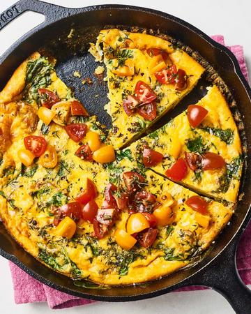

Description
Frittata can save you on a hungry weeknight.
As long as you have a few vegetables and maybe a little meat to throw in a skillet, you can have a frittata on the table in about 20 minutes.
Let me tell you, there is nothing better than diving into a plate of steaming veggie-filled eggs when you’re home late and starving.
Ingredients
- 6 large eggs, enough to cover the ingredients
- 1/4 cup heavy cream
- 1 teaspoon kosher salt, divided
- 4 slices thick-cut bacon (8 ounces), chopped (optional)
- 2 small Yukon gold potatoes, peeled and thinly sliced
- 1/4 teaspoon freshly ground black pepper
- 2 cups baby spinach (2 ounces)
- 2 cloves garlic, minced
- 2 teaspoons fresh thyme leaves
- 1 cup shredded cheese, such as Gruyère, Fontina, or cheddar (optional)
Steps
- Heat the oven. Arrange a rack in the middle of the oven and heat to 400°F.
- Whisk the eggs and cream together. Whisk the eggs, heavy cream, and 1/2 teaspoon salt together in a small bowl; set aside.
- Cook the bacon.
Place the bacon in a cold 10- to 12-inch nonstick ovensafe frying pan or cast iron skillet, then turn the heat to medium-high.
Cook the bacon, stirring occasionally, until crisp, 8 to 10 minutes.
Remove the bacon with a slotted spoon to a paper towel-lined plate and pour off all but 2 tablespoons of the fat.
(If omitting the bacon, heat 2 tablespoons oil in the skillet, then proceed with adding the potatoes).
- Saute the potatoes in bacon fat. Return the pan to medium-heat, add the potatoes and sprinkle with the pepper and the remaining 1/2 teaspoon salt.
Cook, stirring occasionally, until tender and lightly browned, 4 to 6 minutes.
- Wilt the spinach with the garlic and thyme.
Pile the spinach into the pan with the garlic and thyme, and cook, stirring, for 30 seconds to 1 minute or until spinach wilts.
Add the bacon back to the pan and stir to evenly distribute.
- Add the cheese. Spread the vegetables into an even layer, flattening with a spatula. Sprinkle the cheese on top and let it just start to melt.
- Pour the egg mixture into the skillet. Pour the egg mixture over the vegetables and cheese.
Tilt the pan to make sure the eggs settle evenly over all the vegetables.
Cook for a minute or two until you see the eggs at the edges of the pan beginning to set.
- Bake the frittata for 8 to 10 minutes.
Bake until the eggs are set, 8 to 10 minutes.
To check, cut a small slit in the center of the frittata.
If raw eggs run into the cut, bake for another few minutes; if the eggs are set, pull the frittata from the oven.
For a browned, crispy top, run the frittata under the broiler for a minute or two at the end of cooking.
- Cool and serve. Cool in the pan for 5 minutes, then slice into wedges and serve.
Return to main menu